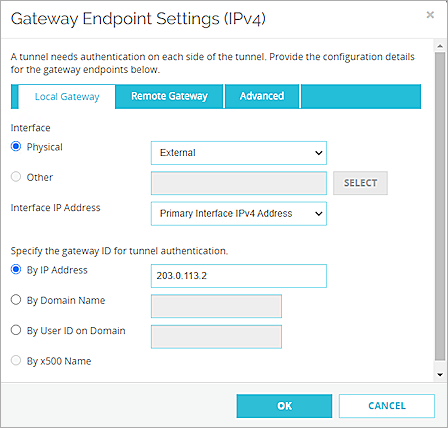
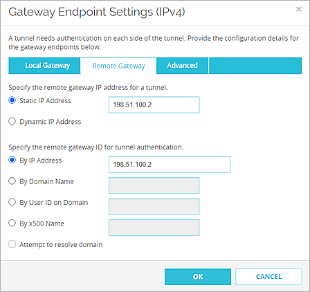

Deployment Overview
WatchGuard provides integration instructions to help our customers configure WatchGuard products to work with products created by other organizations. If you need more information or technical support about how to configure a third-party product, see the documentation and support resources for that product.
This integration guide describes how to configure a BOVPN virtual interface between a WatchGuard Firebox and a Juniper® SRX300.
Integration Summary
The hardware and software used in this guide include:
- WatchGuard Firebox with Fireware v12.7
- Juniper SRX300 v19.4R3-S1.3
Topology
This diagram shows the topology for a BOVPN virtual interface connection between a Firebox and a Juniper SRX300.

Configure the Firebox
On the Firebox, configure a Branch Office VPN (BOVPN) virtual interface connection:
- Log in to Fireware Web UI.
- Select VPN > BOVPN Virtual Interfaces.
The BOVPN Virtual Interfaces configuration page opens. - Click Add.
- In the Interface Name text box, type a name to identify this BOVPN virtual interface.
- From the Remote Endpoint Type drop-down list, select Cloud VPN or Third-Party Gateway.
- From the Gateway Address Family drop-down list, select IPv4 Addresses.
- In the Credential Method section, select Use Pre-Shared Key.
- In the adjacent text box, type the pre-shared key.
- In the Gateway Endpoint section, click Add.
The Gateway Endpoint Settings dialog box opens. - From the Physical drop-down list, select External.
- From the Interface IP Address drop-down list, select Primary Interface IPv4 Address.
The Primary Interface IP Address is the primary IP address you configured on the selected external interface. - Select By IP Address.
- In the adjacent text box, type the primary IP address of the External Firebox interface.

- Select the Remote Gateway tab.
- Select Static IP Address.
- In the adjacent text box, type the public IP address of the ge-0/0/0.0 interface on the Juniper SRX300.
- Select By IP Address.
- In the adjacent text box, type the public IP address of the ge-0/0/0.0 interface on the Juniper SRX300.

- Click OK.
- In the Gateway Endpoint section, select Start Phase 1 tunnel when it is inactive.
- Select Add this tunnel to the BOVPN-Allow policies.
- Select the VPN Routes tab.
- Click Add.
The VPN Route Settings dialog box opens. - From the Choose Type drop-down list, select Network IPv4.
- In the Route To text box, type the network IP address of the route that uses this virtual interface.
- Click OK.
- Select the Assign virtual interface IP addresses check box.
- In the Local IP address and Peer IP address or netmask text boxes, type the virtual interface IP addresses.
- Select the Phase 1 Settings tab.
- From the Version drop-down list, select IKEv2.
- Keep the default values for all other Phase 1 Settings.
- Keep the default values for all Phase 2 Settings.
- Click Save.
For more information about BOVPN virtual interface configuration on the Firebox, see BOVPN Virtual Interfaces.
Configure the Juniper SRX300
Follow these steps to configure the settings for your Juniper device.
Configure Basic Settings
- Log in to the Juniper Web Device Manager at https://<IP address of the Juniper device>.
The default IP address is https://192.168.1.1. - Configure the Juniper interfaces.
For information on how to configure interfaces, see the Juniper documentation.
- Configure the zones and bind the zones and interfaces. For information about how to configure zones, see the Juniper documentation.
- Configure the global addresses. For information about how to configure global addresses, see the Juniper documentation.
- Configure static routes. For information about how to configure static routes, see the Juniper documentation.
Configure IPSec VPN Phase 1 Settings
On your Juniper device:
- Select Configure > Security Services > IPsec VPN > IKE (Phase I).
- Select the Proposal tab.
- Click +.
- In Name text box, type a name for the proposal.
- From the Authentication algorithm drop-down list, select sha-256.
- From the Authentication Method drop-down list, select pre-shared-keys.
- From the DH Group drop-down list, select group14.
- From the Encryption algorithm drop-down list, select aes-256-cbc.
- In the Lifetime seconds text box, type the number of seconds.
- Click OK.
The proposal appears in the list.
- Select the IKE Policy tab.
- Click +.
- In the Name text box, type a name for the policy.
- From the Mode drop-down list, select main.
- Select User Defined.
- From the Proposal List, select the proposal you created.
- Select the IKE Policy Options tab.
- Select Pre Shared Key.
- Select Ascii text.
- Type the pre-shared key.
- Click OK.
The policy appears in the list.
- Select the Gateway tab.
- Click +.
The Add Gateway dialog box opens. - In the Name text box, type the Gateway name.
- From the Policy drop-down list, select the policy you created.
- From the External Interface drop-down list, select ge-0/0/0.0.
- Select Site to Site VPN.
- In the Remote Peer IP text box, type the IP address of the external Firebox interface. Click +.
- From the Local Identity Type drop-down list, select IP Address.
- In the IP Address text box, type the Juniper public IP address.
- From the Remote Identity Type drop-down list, select IP Address.
- In the IP Address text box, type the public IP address of Firebox.
- From the IKE Version drop-down list, select v2-only.
- Keep the default values for all other values.
- Select the IKE Gateway Options tab.
- Select the Dead Peer Detection check box.
- Keep the default values for all other values.
- Click OK.
The gateway appears in the list.
- To commit the changes, in the upper-right corner, click the
 button.
button. - Click Commit.
Configure IPsec VPN Phase 2 Settings
On your Juniper device:
- Select Configure > Security Services > IPsec VPN > IPsec (Phase II).
- Select the Proposal tab.
- Click +.
The Add proposal dialog box opens. - In the Name text box, type the proposal name.
- From the Authentication algorithm drop-down list, select hmac-sha-256-128.
- From the Encryption algorithm drop-down list, select aes-256-cbc.
- From the Protocol drop-down list, select esp.
- Click OK.
The proposal appears in the list.
- Select the IPSec Policy tab.
- Click +.
The Add policy dialog box opens. - In the Name text box, type the policy name.
- From the Perfect Forward Secrecy drop-down list, select group14.
- Select User Defined.
- For Proposal List, select the proposal you created.
- Click OK.
- Select the VPN tab.
- Click +.
The Add VPN dialog box opens. - In the VPN Name text box, type the VPN name.
- From the Remote Gateway drop-down list, select GW-JUN-WG.
- From the IPSec Policy drop-down list, select ipsec-phase2-policy.
- From the Bind to tunnel interface drop-down list, select st0.0.
- From the Establish tunnels drop-down list, select immediately.
- Click OK.
The VPN shows in the list.
- To commit the changes, in the upper-right corner, click the button.
- Click Commit.
Configure Security Policy Rules
On your Juniper device:
- Select Configure > Security Services > Security Policy > Rules.
- Click +.
The Create Rule wizard opens. - In the Rule name text box, type the rule name (for example, policy-trust-vpn).
- Click Next.
- From the Zone drop-down list, select trust.
- In the Address(es) text box, select Juniper_address.
- Click Next.
- From the Zone drop-down list, select VPN.
- In the Address(es) text box, select WG_address.
- In the Dynamic Application text box, select None.
- In the Service(s) text box, select any.
- In the URL Category text box, select None.
- Click Next.
- From the Rule Action drop-down list, select Permit.
- Click Next.
- Click Finish.
- Click OK.
The rule appears in the list.
- To create another security policy, repeat steps 2 through 17.
- To commit the changes, in the upper-right corner, click the button.
- Click Commit.
Test the Integration
To test the integration, from Fireware Web UI:
- Select System Status > VPN Statistics.
- Select the Branch Office VPN tab.
- Verify that the VPN is established.
- Verify that Host 1 (behind the Firebox) and Host 2 (behind the Juniper SRX300) can successfully ping each other.